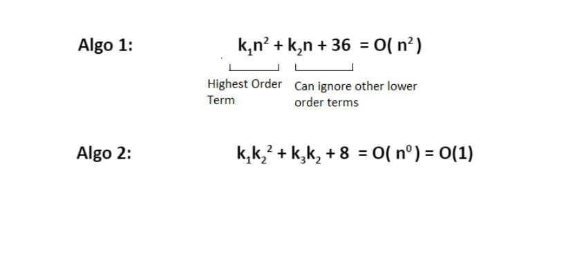
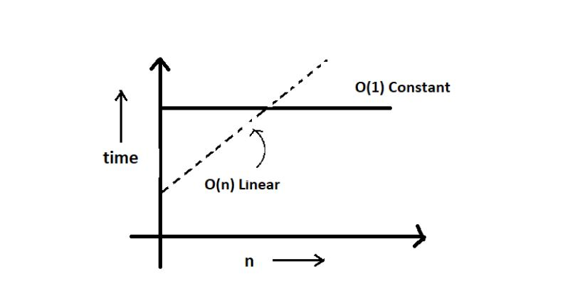

Time Complexity and Big O Notation
What is Time Complexity?
Time Complexity is the study of the efficiency of algorithms. It tells us how much time is taken by an algorithm to process a given input.
Let's understand this concept with the help of an example:
Consider two developers Shubham and Rohan, who created an algorithm to sort ‘n’ numbers independently. When I made the program run for some input size n, the following results were recorded:
No. of elements (n)
Time Taken By Shubham's Algo
Time Taken By Rohan's Algo
10
90 ms
122 ms
70
110 ms
124 ms
110
180 ms
131 ms
1000
2 s
800 ms
We can see that at first, Shubham's algorithm worked well with smaller inputs; however, as we increase the number of elements, Rohan's algorithm performs much better.
Time Complexity: Sending GTA 5 To a friend:
- Imagine you have a friend who lives 5 km away from you. You want to send him a game. Since the final exams are over and you want him to get this 60 GB file worth of game from you. How will you send it to him in the shortest time possible?
- Note that both of you are using JIO 4G with a 1 Gb/day data limit.
- The best way would be to send him the game by delivering it to his house. Copy the game to a hard disk and make it reach him physically.
- Would you do the same for sending some small-sized game like MineSweeper which is in KBS of size? Of Course no, because you can now easily send it via the Internet.
- As the file size grows, the time taken to send the game online increases linearly – O(n) while the time taken by sending it physically remains constant. O(n0) or O(1).
Calculating Order in terms of Input Size:
In order to calculate the order(time complexity), the most impactful term containing n is taken into account (Here n refers to Size of input). And the rest of the smaller terms are ignored. Let us assume the following formula for the algorithms in terms of input size n:

Here, we ignored the smaller terms in algo 1 and carried the most impactful term, which was the square of the input size. Hence the time complexity became n^2. The second algorithm followed just a constant time complexity.
Note that these are the formulas for the time taken by their program.
What is Big O?
Putting it simply, big O stands for 'order of' in our industry, but this is pretty different from the mathematical definition of the big O. Big O in mathematics stands for all those comlexitites our program runs in. But in industry, we are asked the minimum of them. So this was a subtle difference.
Visualizing Big O:
If we were to plot O(1) and O(n) on a graph, they would look something like this.
Big - O Complexity Chart